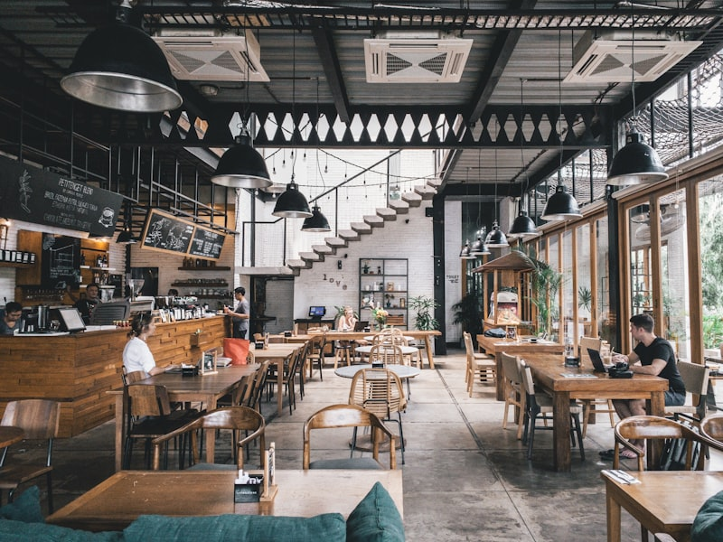

Os sabores autênticos do Brasil
na costa dourada de Cascais

O Fénix Café nasceu da paixão por trazer os sabores mais autênticos do Brasil para Parede. Café especial, pastéis estaladiços e pratos tradicionais confecionados todos os dias com carinho e ingredientes frescos.
Situados na Rua Capitão Leitão, a dois passos do mar, somos o ponto de encontro da comunidade local e dos visitantes que descobrem a costa de Cascais.
★★★★★"Food: 5, Service: 5, Atmosphere: 5"
— Duda · 5★
★★★★☆"Food: 4, Service: 3, Atmosphere: 3"
— Paulo · 4★
★★★★☆"65% of reviews rate 5 stars across 45 total reviews — o Fénix Café é uma das experiências mais apreciadas da zona de Parede."
— Agregado Google · 4.3★ média
Terça a Domingo
08:00 — 02:00
Encerrado à Segunda-feiraRua Capitão Leitão, 13
2775-271 Parede, Cascais
+351 963 348 481
Ligar Agora →A dois passos da costa de Cascais, o Fénix Café é o ponto de encontro perfeito — para o pequeno-almoço, almoço, jantar ou uma boa caipirinha à noite.
Rua Capitão Leitão, 13
2775-271, Parede, Cascais
Terça a Domingo · 08:00–02:00
Rua Capitão Leitão, 13
Parede, Cascais 2775-271